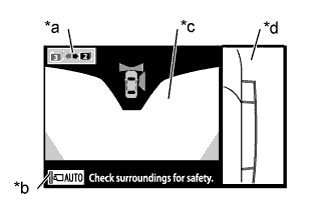
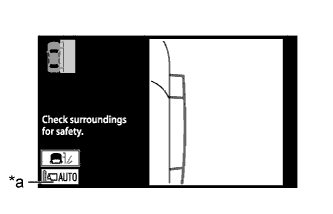
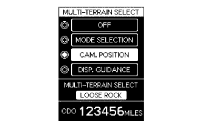

SIDE MONITOR SYSTEM (w/ Parking Assist Monitor System) > SYSTEM DESCRIPTION |
| GENERAL |
This system has a side television camera assembly built into the outer rear view mirror assembly (passenger side) to display the passenger side view of the vehicle on the display and navigation module display.
This system consists of the following components:
Front passenger side television camera assembly
Driver side television camera assembly*
Parking assist ECU
Display and navigation module display
Spiral with sensor cable sub-assembly
Steering pad switch assembly (wide view front and side monitor switch, multi-function switch*)
Skid control ECU
Park/neutral position switch assembly
This system is equipped with a self-diagnosis system, which is operated on a designated window that appears on the display panel, just as in the navigation system.
| FUNCTION OF COMPONENTS |
The parking assist ECU controls the system by using information from the following components.
| Item | Function |
|
|
| Parking Assist ECU |
|
| Display and Navigation Module Display | Receives the video signals containing a composite of the passenger side view of the vehicle from the parking assist ECU, and displays them on the display panel. |
| Park/Neutral Position Switch Assembly | Sends the shift position signal to the parking assist ECU through CAN communication. |
| Spiral with Sensor Cable Sub-assembly | Transmits a steering angle sensor signal to the parking assist ECU. |
| Steering Pad Switch Assembly |
|
| Driving Support Switch Control ECU* | Receives a steering pad switch signal and transmits it to the parking assist ECU through CAN communication |
| Skid Control ECU | Transmits a vehicle speed signal to the parking assist ECU. |
| OPERATION EXPLANATION |
The wide view front and side monitor switch on signal is sent from the steering pad switch to the parking assist ECU.
After receiving the wide view front and side monitor switch on signal, the parking assist ECU switches the display signal for the display and navigation module display from the navigation system to the side monitor system.
| DISPLAY CONDITIONS FOR SIDE MONITOR DISPLAY |
|  |
Screen display operation for wide view front and side monitor screen
| *a | Change display mode switch (Illustration shows mode 3) |
| *b | Automatic display mode set/cancel switch (Illustration shows automatic display mode off) |
| *c | Wide View Front Monitor Screen |
| *d | Side Monitor Screen |
After the display conditions have been met while the wide view front monitor system and the side monitor system are operating normally (when no DTCs are stored), the wide view front and side monitor screen will show the initial display in both manual and automatic modes.
| Display Mode | Change Display Mode Switch | Function |
| 3 | 3 is grayed out | While the wide view front and side monitor screen is displayed, pressing the wide view front and side monitor switch will change the display to either the wide view front monitor or the side view monitor display (the specific transition will depend on the last mode displayed). |
| 2 | 2 is grayed out | While the wide view front and side monitor screen is displayed, pressing the wide view front and side monitor switch will change the display to the navigation screen, the information configuration screen, or a similar screen. |
| Automatic Mode Display Button (Indicator in Button) | Display Mode |
| On (Illuminated) | Automatic display mode |
| Off (Not illuminated) | Manual display mode |
|  |
Screen display operation for wide view front and side monitor screen
| *a | Automatic Mode Display Button |
After the display conditions are met while the side monitor system is operating normally (when no DTCs are stored), the side monitor display will be displayed when in both manual and automatic display mode.
| Automatic Mode Display Button (Indicator in Button) | Display Mode |
| On (Illuminated) | Automatic display mode |
| Off (Not illuminated) | Manual display mode |
Display conditions for manual display mode, when shift lever in R
| Automatic Mode Display Button | Multi-display Screen | Shift Lever Position | Vehicle Speed | Screen (Changes Due to Wide View Front and Side Monitor Switch Operation) |
| OFF | Parking assist monitor display | R | 12 km/h (7.5 mph) or less | Rear monitor display → Wide view front and side monitor display |
 | Wide view front and side monitor switch pressed | When the vehicle speed is more than 12 km/h (7.5 mph) |
Display conditions for manual display mode, when shift lever not in R
The side monitor system changes the displayed image when the wide view front and side monitor switch is operated while the following conditions are met and either the engine switch is on (IG) or the engine is running (no DTCs stored).
| Automatic Mode Display Button | Multi-display Screen | Shift Lever Position | Vehicle Speed | Screen (Changes Due to Wide View Front and Side Monitor Switch Operation) |
| OFF | Navigation display, etc. | Not in R | 12 km/h (7.5 mph) or less | Navigation display, etc. → Wide view front and side monitor display → Navigation display, etc. |
| OFF | Navigation display, etc. | Not in R | 12 km/h (7.5 mph) or less | Navigation display, etc. → Side monitor display |
| Wide view front and side monitor switch pressed | When the vehicle speed is more than 12 km/h (7.5 mph) |
Display conditions for automatic display mode
In automatic display mode, the side monitor system automatically changes the displayed image depending on the vehicle conditions while the following conditions are met and the system is operating normally (no DTCs stored).
| Vehicle Condition | Display and Navigation Module Display Screen | Shift Position | Vehicle Speed | Screen |
| Stopped → Driving | Navigation display, etc. | Not in P or R | 12 km/h (7.5 mph) or less | Navigation display, etc. → Wide view front and side monitor display |
| Driving → Stopped | Navigation display, etc. | Not in R | 10 km/h (6.2 mph) or less | Navigation display, etc. → Wide view front and side monitor display |
The side monitor system switches display modes when the side monitor display is displayed and the line mode button is operated. In each display mode, when the display range button (for forward view) is operated, the forward view is displayed on the screen.
| *a | Predicted Minimum Turning Path Line + Predicted Path Line Mode | *b | Predicted Minimum Turning Path Line Mode |
| *c | Path Line Deletion Mode | *d | Line Mode Button |
| Line mode button on | - | - |
| Side Monitor Display Mode | Vehicle Width Parallel Line (Green) | Predicted Minimum Turning Path Line (Green) | Predicted Path Line (Yellow) |
| Predicted Minimum Turning Path Line + Predicted Path Line Mode | Displayed | Displayed | Displayed |
| Predicted Minimum Turning Path Line Mode | Displayed | Displayed | Not displayed |
| Path Line Deletion Mode | Displayed | Not displayed | Not displayed |
Display conditions for manual display mode (Shift lever in a position other than R)
During manual display mode (shift lever in a position other than R) with the engine switch on (IG) or the engine running (no DTCs are stored), if the following conditions have been met, pressing the wide view front and side monitor switch will change the display mode as follows.
| Automatic Mode Display Button | Multi-display Screen | Shift Lever Position | Vehicle Speed | Last Mode Screen | Screen (Changes Due to Wide View Front and Side Monitor Switch Operation) |
| OFF | Navigation display, etc. | Not in R | 12 km/h (7.5 mph) or less | Wide view front monitor display | Navigation display, etc. → Wide view front and side monitor display → Side monitor display → Wide view front monitor display → Wide view front and side monitor display |
| *a | Navigation display, etc. | *b | Wide view front and side monitor screen |
| *c | Side monitor screen | *d | Wide view front monitor screen |
 | When wide view front and side monitor switch is pressed (while mode 3 is being displayed) | | When wide view front and side monitor switch is pressed (while mode 2 is being displayed) |
| When vehicle speed is more than 12 km/h (7.5 mph) | - | - |
| Automatic Mode Display Button | Multi-display Screen | Shift Lever Position | Vehicle Speed | Last Mode Screen | Screen (Changes Due to Wide View Front and Side Monitor Switch Operation) |
| OFF | Navigation display, etc. | Not in R | 12 km/h (7.5 mph) or less | Side monitor display | Navigation display, etc. → Wide view front and side monitor display → Side monitor display → Wide view front monitor display → Wide view front and side monitor display |
| *a | Navigation display, etc. | *b | Wide view front and side monitor screen |
| *c | Side monitor screen | *d | Wide view front monitor screen |
| When wide view front and side monitor switch is pressed (while mode 3 is being displayed) | | When wide view front and side monitor switch is pressed (while mode 2 is being displayed) |
| When vehicle speed is more than 12 km/h (7.5 mph) | - | - |
Display conditions for manual display mode (Shift lever in R)
| *1 | Rear view monitor display | *2 | Wide view front and side monitor display |
| Wide view front and side monitor switch pressed | - | - |
During manual display mode (shift lever in R position) with the engine switch on (IG) or the engine running (no DTCs are stored), if the following conditions have been met, pressing the wide view front and side monitor switch will change the display mode as follows.
| Display Screen | Vehicle Speed | Screen (Changes Due to Wide View Front and Side Monitor Switch Operation) |
| Rear view monitor display | 12 km/h (7.5 mph) or less | Rear view monitor display → Wide view front monitor and side monitor display → Rear view monitor display |
Display conditions for automatic display mode
In automatic display mode, the side monitor system automatically changes the displayed image depending on the vehicle conditions while the following conditions are met and the system is operating normally (no DTCs stored).
| Vehicle Condition | Display Screen | Shift Position | Vehicle Speed | Screen |
| Stopped → Driving | Navigation display, etc. | Not in P or R | 12 km/h (7.5 mph) or less | Navigation display, etc. → Wide view front monitor and side monitor display*1 |
| Driving → Stopped | Navigation display, etc. | Not in P or R | 10 km/h (6.2 mph) or less | Navigation display, etc. → Wide view front monitor and side monitor display*1 |
| DISPLAY CONDITIONS FOR MULTI-TERRAIN MONITOR |
Turn the engine switch on (IG).
Turn multi-terrain select mode on.
|  |
Select "CAM. POSITION".
The following are the display conditions for camera selection in multi-terrain select mode when the shift lever is not in R.
| Engine Switch | Multi-terrain Select | Shift Lever Position | Vehicle Speed |
| on (IG) | On | Any position except R | Less than 10 km/h (6.2 mph) |
| *a | Multi-information Display Outline | *b | Display and Navigation Module Display Outline |
| Multi-information display changes when multi-function switch is pushed up/down | | Display and navigation module display changes when multi-function switch is pushed up/down |
The following are the display conditions for camera selection in multi-terrain select mode when the shift lever is in R.
| Engine Switch | Multi-terrain Select | Shift Lever Position | Vehicle Speed |
| on (IG) | On | R | Less than 10 km/h (6.2 mph) |
| *a | Multi-information Display Outline | *b | Display and Navigation Module Display Outline |
| Multi-information display changes when multi-function switch is pushed up/down | | Display and navigation module display changes when multi-function switch is pushed up/down |
| COMMUNICATION SYSTEM OUTLINE |
The components of the side monitor system communicate with each other through the AVC-LAN. If a short circuit or open circuit occurs in the AVC-LAN, communication is interrupted and the side monitor system will stop functioning.
| DIAGNOSTIC FUNCTION OUTLINE |
This side monitor system has a diagnostic function displayed in the display and navigation module display assembly. This function enables the calibration (adjustment and confirm) of the system (Click here).
The system can check the following items by using the intelligent tester.
| Item | Proceed to |
| DTC |
Click here
|
| Data List / Active Test |
Click here
|